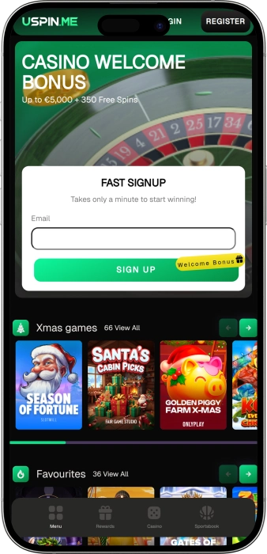

Exclusive welcome offer of
Exclusive welcome bonus of
Play Premium Online Casino Games with Instant Wins
Top Casino
Bonus Details
Casino
Bonuses
Rate
Free Spins
More Info
Get
Advantages
- Looking for a trusted online casino in the UK? Uspin offers licensed gaming with certified RNG technology, lightning-fast withdrawals, and professional support available around the clock. Here's what makes us stand out:
-
Licensed by Curacao eGaming Authority with provably fair gaming technology
-
5000+ games from Pragmatic Play, Evolution Gaming, Yggdrasil and Hacksaw Gaming
-
Instant withdrawals with cryptocurrencies, e-wallets and traditional payment methods
-
24/7 live chat support in English with average response time under 2 minutes
-
VIP loyalty program with exclusive rewards, cashback and tournament access
-
Minimum deposit from just £25 with no hidden fees or withdrawal charges
- Join thousands of satisfied UK players enjoying secure gaming and rapid payouts. Our dedicated support team is always ready to assist you with any questions or concerns you may have.
Uspin App


About Uspin Casino
Uspin Casino has established itself as a modern online gaming platform designed for UK and European players. Our commitment to player convenience and transparent operations has earned us recognition in the competitive online casino market.
- Launch of comprehensive online gaming platform with instant registration
- Introduction of live dealer studios with HD streaming technology
- Expansion to 5000+ game library from leading software providers
- Implementation of cryptocurrency payment system for faster transactions
We operate under Curacao eGaming License with certified fairness standards. Our platform uses advanced SSL encryption to protect your personal and financial data. All games undergo regular testing by independent auditors for random outcomes. We continue expanding our gaming offerings with new titles and payment options. Our dedication to responsible gaming and player satisfaction remains our highest priority. Experience the difference with Uspin today.
Complete Guide to Online Casino Games at Uspin
Explore the World of Online Casino Gaming
Online casino gaming has transformed the entertainment industry, offering players unprecedented access to thousands of games from the comfort of their homes. At Uspin Casino, we provide a comprehensive gaming experience that caters to both newcomers and experienced players. Our platform features cutting-edge technology, secure payment systems, and an extensive library of games from the world's leading software providers. Whether you prefer classic slots, live dealer games, or progressive jackpots, our casino delivers entertainment that meets the highest industry standards.
The online casino landscape has evolved significantly over recent years, with technological advancements enabling immersive experiences that rival traditional brick-and-mortar establishments. Modern online casinos like Uspin utilise sophisticated random number generators, high-definition streaming, and mobile-optimised interfaces to create seamless gaming environments. Players can now enjoy authentic casino atmospheres with professional dealers, real-time interaction, and substantial winning opportunities without leaving their homes. Our commitment to innovation ensures that every gaming session delivers excitement and potential rewards.
Understanding Slot Games and Mechanics
Slot games represent the most popular category in online casinos, with our platform hosting over 4000 different titles. These games range from classic three-reel fruit machines to sophisticated video slots featuring multiple paylines, bonus rounds, and progressive jackpots. Modern slots incorporate engaging themes, captivating storylines, and innovative mechanics that keep gameplay fresh and entertaining. Understanding how slots work helps players make informed decisions about their gaming strategies.
Each slot game operates using a random number generator that ensures fair and unpredictable outcomes. Return to player percentages typically range from 94% to 98%, indicating the theoretical amount returned to players over extended gameplay. Volatility levels determine how frequently and substantially games pay out, with high volatility slots offering larger but less frequent wins, while low volatility games provide smaller, more regular payouts. Players should consider these factors alongside their personal preferences and bankroll management strategies.
- Megaways Slots: These innovative games feature dynamic reel configurations with up to 117,649 ways to win. Each spin produces a different number of symbols per reel, creating exciting variation and substantial winning potential through cascading wins and increasing multipliers.
- Progressive Jackpot Slots: Connected across multiple casinos, these games accumulate prize pools that can reach millions. A small percentage of each bet contributes to the jackpot, which continues growing until one lucky player triggers the winning combination.
- Classic Slots: Traditional three-reel games offer straightforward gameplay with familiar fruit symbols and simple paylines. These titles appeal to players seeking nostalgic experiences and uncomplicated mechanics without complex bonus features.
- Video Slots: Modern five-reel games incorporate advanced graphics, animated sequences, and immersive soundtracks. Bonus features include free spins, pick-and-click games, expanding wilds, and interactive storylines that enhance entertainment value.
- Branded Slots: Licensed games based on popular films, television series, and music artists attract fans with authentic content and familiar characters. These slots often feature original footage, soundtracks, and unique bonus rounds that reflect their source material.
Live Dealer Gaming Experience
Live dealer games bridge the gap between online convenience and authentic casino atmosphere. Professional dealers operate real tables streamed in high definition directly to your device, enabling real-time interaction and genuine gaming experiences. Our live casino section features multiple variants of roulette, blackjack, baccarat, and poker, alongside innovative game shows that combine traditional casino elements with entertainment value. Players can communicate with dealers through live chat, observe other participants, and enjoy the social aspects of casino gaming from anywhere.
Evolution Gaming powers our live dealer offerings, providing industry-leading technology and professionally trained dealers who create welcoming environments for all players. Studios feature multiple camera angles, advanced streaming capabilities, and interactive interfaces that make navigation intuitive. Table limits accommodate various bankrolls, from low-stakes casual play to high-roller VIP tables with substantial betting ranges. The immersive nature of live gaming replicates the excitement of physical casinos while maintaining the convenience and accessibility of online platforms.
- Live Roulette: Multiple variants including European, French, and American roulette offer diverse betting options and table limits. Special features like Lightning Roulette add multipliers to random numbers, potentially increasing payouts up to 500 times your stake.
- Live Blackjack: Classic 21 gameplay with professional dealers following standard casino rules. Side bets, multiple seating positions, and various rule variations provide strategic depth and flexibility for different playing styles and preferences.
- Live Baccarat: Popular among high rollers, this elegant card game offers straightforward gameplay with player and banker bets. Squeeze variations add theatrical elements as dealers slowly reveal cards for enhanced suspense.
- Game Shows: Innovative formats like Crazy Time, Monopoly Live, and Deal or No Deal combine traditional casino elements with television game show concepts. Bonus rounds feature physical wheels, augmented reality, and interactive components.
- Live Poker: Various poker formats including Casino Hold'em and Three Card Poker provide competitive gameplay against the house. Professional dealers manage the action while players make strategic decisions based on hand strength.
Table Games and Strategy
Traditional table games form the foundation of casino gaming, offering strategic depth and skill-based elements alongside chance. Our collection includes numerous variants of blackjack, roulette, baccarat, craps, and poker, each with unique rules and betting options. Understanding basic strategies and house edges helps players maximise their chances while managing their bankrolls effectively. Table games typically feature lower house edges compared to slots, making them attractive options for strategic players.
Blackjack stands out as one of the most player-friendly casino games, with house edges as low as 0.5% when using optimal basic strategy. Learning when to hit, stand, double down, or split pairs significantly impacts long-term results. Roulette offers diverse betting options across numbers, colours, and sections, with European variants providing better odds than American versions due to the single zero. Baccarat's straightforward gameplay and low house edge make it popular among high rollers despite its simple betting structure.
Progressive Jackpot Opportunities
Progressive jackpot games represent the pinnacle of potential winnings in online casinos, with prize pools accumulating across networks of connected games. Every bet contributes a small percentage to the jackpot fund, which continues growing until a lucky player triggers the winning combination. Some progressive slots have awarded life-changing sums exceeding ten million pounds, transforming ordinary gaming sessions into extraordinary moments. These games combine the excitement of regular slot gameplay with the tantalising possibility of massive payouts.
While progressive jackpots offer substantial rewards, players should understand that these games typically feature higher volatility and slightly reduced base game payouts compared to standard slots. The vast majority of returns come from regular wins rather than jackpot triggers, which occur rarely but spectacularly. Responsible gaming principles apply especially to progressive slots, where the allure of massive prizes can encourage extended play. Setting strict budgets and time limits helps maintain entertainment value while pursuing these extraordinary opportunities.
Mobile Gaming and Accessibility
Modern online casino platforms prioritise mobile compatibility, recognising that many players prefer gaming on smartphones and tablets. Our fully optimised mobile interface provides seamless access to thousands of games without requiring app downloads. Responsive design ensures that navigation, gameplay, and transactions function smoothly across various screen sizes and operating systems. Mobile gaming offers flexibility and convenience, enabling players to enjoy their favourite games during commutes, breaks, or leisure time.
Touch-optimised controls make mobile gameplay intuitive and engaging, with simplified interfaces that maximise screen real estate while maintaining functionality. Loading times remain minimal even on moderate internet connections, and games adapt their graphics quality to match device capabilities. Live dealer games stream effectively on mobile devices, providing authentic casino experiences wherever players happen to be. The integration of mobile payment methods further streamlines the gaming process, making deposits and withdrawals quick and convenient.
- Instant Play Technology: Browser-based gaming eliminates the need for app installations while providing full access to game libraries. HTML5 technology ensures compatibility across iOS, Android, and other mobile operating systems without performance compromises.
- Optimised User Interface: Mobile layouts prioritise essential functions with streamlined navigation menus and prominent game categories. Quick access to account management, banking options, and customer support enhances the overall user experience.
- Performance Optimisation: Games load rapidly and run smoothly on mobile devices thanks to optimised coding and adaptive graphics quality. Battery consumption remains reasonable even during extended gaming sessions with appropriate power management.
- Security Features: Mobile gaming maintains the same encryption standards and security protocols as desktop platforms. Biometric authentication options like fingerprint and face recognition add convenience without compromising account protection.
Responsible Gaming Principles
Responsible gaming forms the cornerstone of ethical online casino operations, ensuring that entertainment remains enjoyable and sustainable for all players. We implement comprehensive tools and resources that help players maintain control over their gaming activities. Setting deposit limits, time restrictions, and loss limits enables players to enjoy casino games within their personal boundaries. Understanding that gambling should never interfere with financial obligations or personal relationships helps maintain healthy gaming habits.
Recognition of problem gambling signs allows players to seek assistance before issues escalate. Warning signals include chasing losses, gambling with money designated for essential expenses, neglecting responsibilities, or using gaming as an escape from problems. Our platform provides self-exclusion options, cooling-off periods, and direct links to professional support organisations specialising in gambling addiction. Creating a safe and supportive environment for all players remains our unwavering commitment to responsible operations.
Educating players about game mechanics, house edges, and probability helps establish realistic expectations about casino gaming. No strategy guarantees profits, and games are designed to provide entertainment rather than consistent income sources. Viewing gambling as a leisure activity with associated costs rather than an investment opportunity promotes healthier attitudes. When approached responsibly, online casino gaming offers exciting entertainment and the potential for occasional wins within a controlled framework.
Software Providers
Payment Methods and Banking Guide for UK Players
Comprehensive Banking Solutions for Online Casino Players
Efficient and secure banking forms the foundation of positive online casino experiences, enabling players to fund accounts and withdraw winnings with confidence. At Uspin Casino, we provide diverse payment options that accommodate various preferences and requirements. Our banking infrastructure combines traditional methods with innovative solutions, ensuring that UK players can manage their funds conveniently. Understanding available payment options, processing times, and security measures helps players make informed decisions about their casino banking.
The evolution of online payment technology has revolutionised casino banking, introducing faster processing speeds and enhanced security protocols. Modern encryption standards protect financial information throughout transactions, while advanced verification systems prevent unauthorised access to player accounts. Our commitment to transparent banking practices means no hidden fees on deposits or withdrawals, allowing players to focus on gaming rather than financial concerns. We continuously evaluate emerging payment technologies to provide cutting-edge banking solutions.
Traditional Payment Methods
Conventional banking methods remain popular among players who value familiarity and established trust. Credit and debit cards provide straightforward deposit options with instant processing, enabling immediate access to casino games. Bank transfers offer substantial transaction limits suitable for high-volume players, though processing times extend longer than alternative methods. These traditional approaches benefit from widespread acceptance and robust consumer protection frameworks established over decades of financial services evolution.
Visa and Mastercard dominate the credit card landscape, with virtually universal acceptance across online platforms. These cards process deposits instantly while providing chargeback options and fraud protection through issuing banks. Debit cards offer similar functionality while drawing directly from bank accounts, helping players maintain budgetary control. Some financial institutions restrict gambling transactions, requiring players to verify their cards are compatible with online casino deposits before attempting funding.
| Payment Method | Dep / Wdr Time | Limits / Fees |
|---|---|---|
| Visa/Mastercard | Inst 1–3 bd |
£25–£10,000 None |
| Bank Transfer | 1–3 bd 3–5 bd |
£100–£50,000 None |
| E-Wallets | Inst 0–24 h |
£25–£25,000 None |
| Crypto | 10–30 min 0–2 h |
£25–£100,000 Network |
| Prepaid Cards | Inst N/A |
£25–£5,000 None |
| Mobile Pay | Inst N/A |
£25–£1,000 None |
E-Wallet Solutions
Electronic wallets represent the fastest and most convenient banking method for online casino transactions. These intermediary services enable instant deposits and rapid withdrawals without sharing financial details directly with casino platforms. Popular e-wallets maintain robust security measures including two-factor authentication and encrypted storage of payment credentials. The speed and privacy advantages make e-wallets increasingly popular among experienced casino players.
Leading e-wallet providers offer comprehensive financial management tools alongside casino banking capabilities. Players can track transaction histories, set spending limits, and manage multiple funding sources within single platforms. The separation between casino accounts and primary bank accounts adds an additional layer of financial control and security. Many e-wallets also provide mobile apps that facilitate quick deposits during gaming sessions, enhancing overall convenience and accessibility.
- Skrill: Internationally recognised e-wallet with instant deposits and withdrawals typically processed within 24 hours. Offers competitive currency exchange rates and loyalty programmes that reward frequent users with reduced fees and enhanced services.
- Neteller: Veteran e-wallet service providing secure transactions with advanced fraud prevention systems. Features prepaid Mastercard option enabling direct access to funds at ATMs and retail locations worldwide for added flexibility.
- PayPal: Globally trusted platform offering buyer protection and dispute resolution services. While not universally accepted at online casinos due to regulatory policies, availability continues expanding across licensed operators.
- MuchBetter: Mobile-focused payment app designed specifically for online gaming transactions. Utilises dynamic security codes and biometric authentication for enhanced protection against unauthorised access attempts.
- ecoPayz: Versatile e-wallet supporting multiple currencies with tiered account levels offering progressively enhanced transaction limits. Provides physical prepaid cards for convenient fund access outside online environments.
Cryptocurrency Banking
Cryptocurrency payments represent the cutting edge of online casino banking, offering unparalleled speed, privacy, and transaction flexibility. Bitcoin, Ethereum, and other digital currencies enable near-instant deposits and withdrawals with minimal processing delays. The decentralised nature of blockchain technology eliminates intermediary banks, resulting in lower fees and fewer restrictions. Players value cryptocurrencies for their anonymity and the ability to conduct large transactions without traditional banking limitations.
Understanding cryptocurrency basics helps players navigate this innovative payment method effectively. Digital wallets store cryptographic keys that prove ownership of funds recorded on blockchain networks. Transactions are irreversible once confirmed, emphasising the importance of accurate address entry. While cryptocurrency values fluctuate, many casinos process withdrawals in the currency used for deposits, minimising exchange rate exposure. The growing mainstream acceptance of cryptocurrencies continues driving adoption across online gaming platforms.
- Bitcoin (BTC): Original cryptocurrency offering established infrastructure and widespread acceptance across online casinos. Network congestion occasionally extends confirmation times, though Layer 2 solutions like Lightning Network address scalability concerns.
- Ethereum (ETH): Second-largest cryptocurrency by market capitalisation with faster transaction speeds than Bitcoin. Smart contract capabilities enable innovative gaming applications and provably fair gaming implementations on blockchain platforms.
- Litecoin (LTC): Designed for faster transactions with lower fees compared to Bitcoin while maintaining similar security standards. Appeals to players seeking quick confirmations without significant network costs during high-traffic periods.
- Tether (USDT): Stablecoin pegged to the US dollar, eliminating volatility concerns associated with other cryptocurrencies. Combines cryptocurrency transaction benefits with price stability, making it popular for casino banking among risk-averse players.
- Ripple (XRP): Focused on efficient cross-border payments with extremely fast settlement times and minimal transaction fees. Particularly suitable for international players dealing with multiple currency conversions and banking jurisdictions.
Withdrawal Processes and Verification
Efficient withdrawal processes ensure players can access their winnings promptly and securely. Our streamlined procedures prioritise speed while maintaining necessary security protocols that protect both players and operations. First-time withdrawals typically require identity verification to comply with anti-money laundering regulations and prevent fraudulent activities. This one-time process involves submitting identification documents, proof of address, and sometimes payment method verification.
Once verification completes, subsequent withdrawals process automatically without additional documentation requirements. Withdrawal times vary by payment method, with e-wallets and cryptocurrencies offering the fastest processing, often completing within hours. Traditional methods like bank transfers require longer processing periods due to banking system limitations. Understanding these timelines helps players plan their banking activities and select appropriate methods based on their urgency requirements.
- Document Requirements: Government-issued photo identification such as passport or driving licence confirms identity and age. Utility bills or bank statements dated within three months verify residential addresses for regulatory compliance purposes.
- Verification Timeline: Standard verification processes complete within 24 to 48 hours during business days. Submitting clear, legible documents accelerates approval while incomplete submissions may require resubmission causing delays.
- Withdrawal Limits: Daily, weekly, and monthly withdrawal limits vary by player status and VIP tier. Standard players typically enjoy generous limits while VIP members receive enhanced allowances reflecting their activity levels.
- Payment Method Matching: Withdrawals typically process to the same method used for deposits when possible. This policy prevents money laundering while ensuring funds return through verified channels players already established.
- Pending Periods: Brief pending periods allow players to reverse withdrawal requests if they wish to continue playing. Once this window closes, transactions enter final processing stages and cannot be cancelled or modified.
Security Measures and Fraud Prevention
Comprehensive security infrastructure protects financial transactions and personal information throughout the banking process. Industry-standard SSL encryption secures data transmission between players and casino servers, rendering intercepted information useless to unauthorised parties. Multi-layered authentication systems verify user identities during account access and transaction authorisation, preventing unauthorised activities even if login credentials become compromised.
Advanced fraud detection algorithms monitor transaction patterns for suspicious activities, flagging unusual behaviours for review. These systems balance security with user convenience, minimising false positives that might inconvenience legitimate players. Regular security audits by independent specialists ensure our protective measures remain current against evolving threats. Players contribute to their account security by maintaining strong passwords, avoiding public WiFi for transactions, and enabling two-factor authentication where available.
Banking Fees and Transaction Costs
Transparent fee structures help players understand the true costs associated with casino banking. We do not charge fees for deposits or withdrawals, allowing players to retain their full balances and winnings. However, payment providers and financial institutions may impose their own charges, particularly for currency conversions or international transactions. Understanding these potential costs enables informed decision-making when selecting payment methods.
Cryptocurrency transactions involve network fees that vary based on blockchain congestion and transaction priority. These costs typically remain minimal compared to traditional banking fees for international transfers. E-wallets generally offer free deposits but may charge small percentages for certain funding sources or currency exchanges. Credit card companies sometimes classify casino deposits as cash advances, triggering higher interest rates and immediate interest accrual without grace periods.
Players can minimise banking costs by consolidating transactions rather than making frequent small deposits and withdrawals. Selecting payment methods denominated in their local currency avoids conversion fees charged by intermediary processors. Understanding the complete cost structure of each banking method ensures players maximise their gaming budgets while maintaining convenient access to funds. Our customer support team provides detailed information about potential fees associated with different payment options upon request.
Managing Your Casino Bankroll
Effective bankroll management represents a critical skill for sustainable and enjoyable casino gaming. Establishing clear budgets before gambling sessions helps maintain financial control and prevents impulsive decisions during gameplay. Separating gambling funds from essential living expenses ensures that casino activities remain entertainment rather than financial risks. Disciplined players treat casino budgets as entertainment expenses similar to concert tickets or dining experiences.
Deposit limit tools available in account settings enable proactive budget control by preventing excessive funding during emotional moments. Setting these limits based on disposable income and personal financial situations creates sustainable gaming habits. Tracking wins and losses provides realistic perspectives on gambling outcomes over time, helping players understand that casino games are designed for entertainment with house edges ensuring long-term operator profits. Responsible banking practices form the foundation of positive online casino experiences that remain enjoyable and within personal means.
Frequently Asked Questions
Creating an account takes less than two minutes. Click the Sign Up button, enter your email address, create a secure password, and provide basic personal details. Verify your email through the confirmation link sent to your inbox. You can then make your first deposit and start playing immediately. Full identity verification is required before your first withdrawal to comply with licensing regulations.
UK players can use Visa and Mastercard debit cards, bank transfers, e-wallets like Skrill and Neteller, and various cryptocurrencies including Bitcoin and Ethereum. The minimum deposit is £25 across most methods. We do not charge fees for deposits or withdrawals, though your payment provider may apply their own charges. E-wallets and cryptocurrencies offer the fastest processing times.
Withdrawal times depend on your chosen payment method. E-wallets typically process within 24 hours, while cryptocurrencies can be even faster at 0-2 hours. Credit and debit card withdrawals take 1-3 business days, and bank transfers require 3-5 business days. First-time withdrawals may take slightly longer due to account verification procedures. Once verified, subsequent withdrawals process automatically.
Yes, Uspin Casino operates under a Curacao eGaming License, ensuring regulated and fair gaming operations. We use advanced SSL encryption to protect all personal and financial data. All games are powered by certified providers with regularly tested random number generators. Our platform undergoes regular security audits by independent specialists. We are committed to responsible gaming and player protection.
Absolutely. Our entire casino platform is fully optimised for mobile play through your smartphone or tablet browser. No app download is required. Simply visit our website on your mobile device, log in, and access the complete game library. All slots, live dealer games, and account functions work seamlessly on iOS and Android devices. Mobile gameplay maintains the same security standards as desktop.
We offer over 5000 games including video slots, classic slots, progressive jackpots, live dealer tables, and traditional table games. Our library features titles from leading providers like Pragmatic Play, Evolution Gaming, Yggdrasil, and Hacksaw Gaming. Popular categories include Megaways slots, live roulette and blackjack, game shows, and exclusive jackpot tournaments. New games are added regularly to keep our selection fresh.
Welcome bonuses are typically credited automatically upon making your first qualifying deposit. Check the promotions page for current offers and specific terms. Ensure you meet the minimum deposit requirement, which is usually £25. Wagering requirements apply to bonus funds before withdrawal. Read the complete terms and conditions to understand playthrough requirements, eligible games, and maximum bet limits during bonus play.
Yes, our customer support team is available 24/7 through live chat, which is the fastest way to get assistance. You can also contact us via email for non-urgent inquiries. Our support staff speaks English and can help with account issues, payment questions, technical problems, and general inquiries. Average response time for live chat is under two minutes. We are committed to resolving your concerns promptly.
Standard players can withdraw up to £25,000 per transaction depending on the payment method. Monthly limits vary by account status, with VIP players enjoying significantly higher allowances. Cryptocurrency withdrawals typically have the highest limits at £100,000 per transaction. There is no fee charged by Uspin for withdrawals. Limits are in place for security purposes and can be reviewed based on account history and verification level.
Yes, responsible gaming tools are available in your account settings. You can set daily, weekly, or monthly deposit limits to control your spending. Time-out periods and self-exclusion options are also available if you need a break from gaming. These limits take effect immediately once activated and can be adjusted upwards after a cooling-off period. We encourage all players to use these tools to maintain healthy gaming habits.